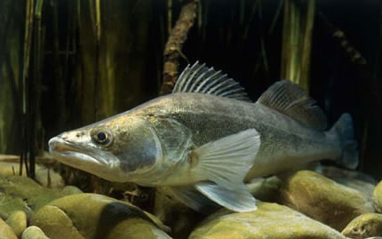

GATUNEK RYBY
Sandacz 🐟
Sandacz to drapieżna ryba słodkowodna. Jest ceniony przez wędkarzy i często łowiony na spinning. Najłatwiej rozpoznać go po wydłużonym ciele i charakterystycznych zębach.
📋 Podstawowe informacje
Rozmiar
Zwykle 40–80 cm
Waga
Może ważyć kilka kilogramów
Występowanie
Jeziora, zbiorniki i rzeki
Trudność
Średnia / trudna
🎣 WĘDKOWANIE
Jak złowić sandacza?
Sandacz jest drapieżnikiem, dlatego często łowi się go na spinning. Warto szukać go w pobliżu dna, szczególnie w miejscach, gdzie może polować na małe ryby.
🎣 Na co łowić?
Popularne są gumowe przynęty spinningowe, a także inne sztuczne przynęty przeznaczone do połowu drapieżników.
📍 Gdzie szukać?
Szukaj go w pobliżu dna, głębszych miejsc, spadów oraz innych miejsc, w których gromadzą się małe ryby.
🕐 Kiedy?
Sandacz często jest aktywny rano, wieczorem i po zmroku. Jego aktywność zależy jednak od warunków w wodzie.